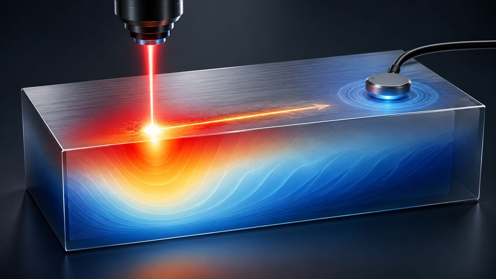
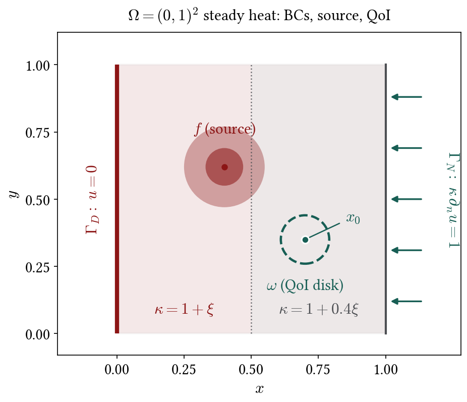
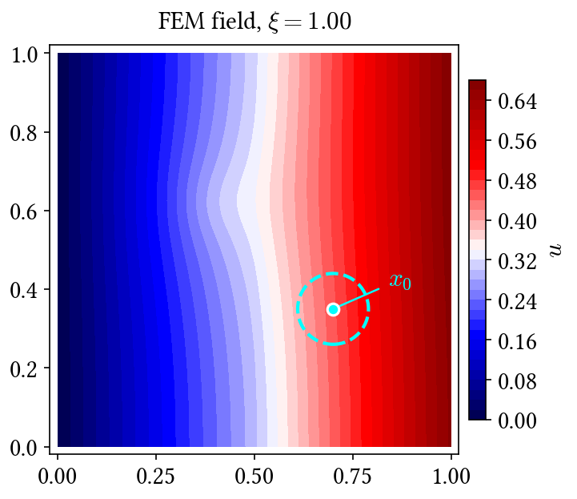
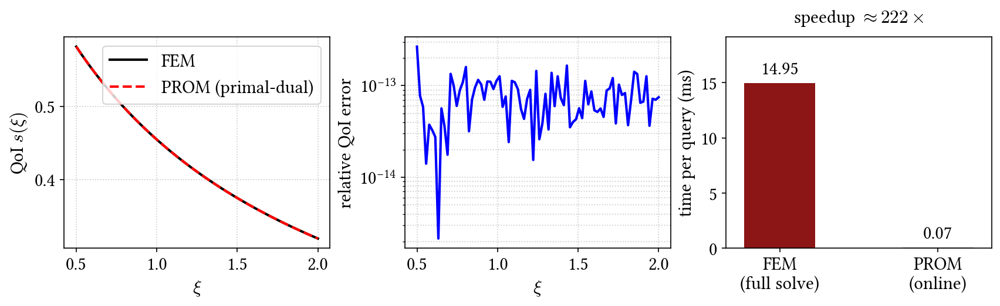
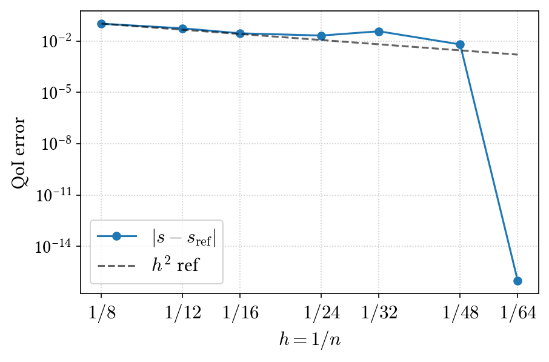

Goal-Oriented Projection-Based Model Order Reduction
Zahm et al. (2017) • 2D heat example
Hanfeng Zhai
Department of Mechanical Engineering, Stanford University
June 2026
Motivation
- Physics: a heat source moves across the part; material or load varies with \(\xi\).
- What we want: one number \(s(\xi)\) at the probe — not the full temperature field.
- Challenge: each new \(\xi\) means a new expensive simulation \(\Rightarrow\) build a fast surrogate for \(s(\xi)\).

Outline
Problem Formulation
Variational Derivation
Goal-Oriented Projection-Based Model Order Reduction
Functional Analysis and inf–sup Stability
Petrov–Galerkin Projection
Primal–Dual Estimators
Certified Error Bounds and Greedy Enrichment
Numerical Demonstration
Summary and Takeaways
Use ← → keys, swipe, or scroll to navigate.
2D steady heat on \(\Omega=(0,1)^2\)
\[ -\nabla\!\cdot\!\big(\kappa\,\nabla u\big)=f,\quad
u=0\ \text{on }\Gamma_D,\quad
\kappa\,\partial_n u=g\ \text{on }\Gamma_N . \]
\[ s=\frac{1}{|\omega|}\int_\omega u=Lu . \]
- \(u\): temperature; \(\kappa\): conductivity; \(f\): source; \(g\): boundary flux.
- \(\xi\): parameter in \(\kappa(x,\xi)\) (not a spatial coordinate).
- \(s\): disk average at probe \(\omega\) (bounded on \(H^1\); point value is not).
GB Part~7, §5.1 [continuous elliptic]; GB Part~4, Def.~1.68 [bounded L]

Weak form
\[ \int_\Omega \kappa\,\nabla u\!\cdot\!\nabla v\,\mathrm{d}x
= \int_\Omega f\,v\,\mathrm{d}x + \int_{\Gamma_N} g\,v\,\mathrm{d}s
\qquad \forall v\in \mathcal{S} . \]
\[ a(u,v)=\ell(v). \]
- \(v\): test function; integration by parts moves derivatives onto \(v\).
- \(\mathcal{S}=\mathcal{V}=H^1_{0,\Gamma_D}\): \(v=0\) on \(\Gamma_D\); Neumann data \(g\) enters \(\ell(v)\).
GB Part~7, §5.1 [IBP → bilinear form]; GB Part~6, (3.1) [variational (3.1)]
Well-posedness
\[ \left\Vert u \right\Vert_{L^2}\le C_P\,\left\Vert \nabla u \right\Vert_{L^2},\qquad
a(u,u)\ge \alpha\,\left\Vert u \right\Vert_{H^1}^2,\qquad
\exists\,\,u\in \mathcal{S}:\ a(u,v)=\ell(v)\ \forall v\in \mathcal{V} . \]
- Continuity of \(a\) and \(\ell\); Poincaré \(\Rightarrow\) coercivity; Lax–Milgram \(\Rightarrow\) unique stable \(u\).
GB Part~7, Lem.~5.4 [Poincaré]; GB Part~7, §5.4 [strong coercivity]; GB Part~6, Cor.~3.10 [Lax–Milgram]
Operator form
\[ \langle Au,v \rangle=a(u,v),\quad \langle b,v \rangle=\ell(v),\qquad Au=b . \]
- \(\langle \cdot,\cdot \rangle\): duality pairing; \(A:\mathcal{S}\to \mathcal{V}'\), \(b\in \mathcal{V}'\).
- \(u\in\mathcal{S}\) trial; \(v\in\mathcal{V}\) test; later \(\mathcal{S}_h\subset\mathcal{S}\), \(\mathcal{V}_h\subset\mathcal{V}\) with \(u_h\in\mathcal{S}_h\), \(v_h\in\mathcal{V}_h\).
- Output \(s=Lu\) (demo scalar; Zahm et al. vector \(Z=\mathbb{R}^l\) in supplementary slides).
GB Part~6, (3.1) [Au=b]; GB Part~4, Def.~1.68 [bounded A]; GB Part~4, Def.~1.73 [dual calV']; GB Part~3, Def.~1.48 [Hilbert]
Parameter \(\xi\)
\[ A(\xi)\,u(\xi)=b(\xi),\qquad s(\xi)=L(\xi)\,u(\xi),\qquad \xi\in\Xi . \]
- \(\xi\): scenario knob (conductivity in demo; BC/load in general) — not a spatial coordinate.
- Many queries: design / UQ need thousands of \(\xi\); full FEM each time is too slow.
- ROM: offline snapshots at \(\xi_i\); online cheap \(s(\xi)\) per query.
GB Part~6, (3.1) [variational form]; GB Part~4, Def.~1.68 [bounded parametric maps]
Parametric output problem
\[ A(\xi)\,u(\xi)=b(\xi),\qquad s(\xi)=L(\xi)\,u(\xi),\qquad \xi\in\Xi . \]
- \(s(\xi)\): output of interest (sensor), not the full field \(u\).
- Offline: build \(\mathcal{S}_h,\mathcal{V}_h,W_k^{Q}\); online: \(s(\xi)\) per query.
\(-\nabla\!\cdot\!(\kappa\nabla u)=f\)
→
\(a(u,v)=\ell(v)\)
→
\(Au=b\)
→
\(s=Lu\)
ROM
GB Part~6, (3.1) [variational form]; GB Part~4, Def.~1.68 [bounded L]
Adjoints \(A^*\), \(L^*\) and dual operator \(Q\)
\[ \langle Au,v \rangle=\langle u,A^{*}v \rangle\ \forall u\in \mathcal{S},\ v\in \mathcal{V} . \]
\[ A^{*}Q=L^{*},\qquad Q\in\mathcal{L}(Z',\mathcal{V}),\qquad s=Lu=Q^{*}b . \]
- \(A^{*}\): test loads → trial space; \(L^{*}\): output component / sensor weight in \(Z'\).
- \(Q\): influence function in \(\mathcal{V}\) — response to unit output loading (probe ⇒ heat on \(\omega\)).
- Exact \(u\) or exact \(Q\) recovers \(s\); ROM approximates both.
GB Part~4, Thm.~1.82 [Riesz]; GB Part~7, Def.~5.7 [adjoint A*]; GB Part~6, Thm.~3.9 [well-posed dual]
What Zahm et al. add
- Goal-oriented: reduced spaces target \(s=Lu\), not only the field \(u\).
- Petrov–Galerkin: \(\mathcal{S}_h\neq\mathcal{V}_h\) plus dual space \(W_k^{Q}\) (three reduced spaces).
- Vector output: \(s\in Z\) with operator dual \(Q\in\mathcal{L}(Z',\mathcal{V})\) (not only scalar QoI).
- Certified bounds: computable \(\Delta(\xi)\) from primal and dual residuals.
- Greedy enrichment: sample at \(\arg\max_\xi\Delta(\xi)\).
- Three estimators (pg → pd → sp): definitions and ladder in supplementary slides.
GB Part~6, §3.3 [Ritz–Galerkin]; GB Part~6, §3.4 [discrete PG]; GB Part~6, Thm.~3.9 [BNB]; GB Part~3, Exo.~1.42 [Cauchy–Schwarz]
inf–sup stability
\[ \alpha\left\Vert u \right\Vert_{\mathcal{S}}\le \left\Vert Au \right\Vert_{\mathcal{V}'}\le \beta\left\Vert u \right\Vert_{\mathcal{S}}, \]
\[ \alpha=\inf_{u\neq 0}\sup_{v\neq 0}\frac{\langle Au,v \rangle}{\left\Vert u \right\Vert_{\mathcal{S}}\left\Vert v \right\Vert_{\mathcal{V}}},\quad
\beta=\sup_{u}\sup_{v}\frac{\langle Au,v \rangle}{\left\Vert u \right\Vert_{\mathcal{S}}\left\Vert v \right\Vert_{\mathcal{V}}}. \]
- \(\alpha>0\): stability (BNB / inf–sup); small residual \(\Rightarrow\) small error.
- Allows \(\mathcal{S}\neq\mathcal{V}\) (Petrov–Galerkin); heat with \(\mathcal{S}=\mathcal{V}\) is the Lax–Milgram case.
GB Part~6, Thm.~3.9 [BNB]; GB Part~6, Cor.~3.10 [Lax–Milgram]
Petrov–Galerkin projection
\[ \langle Au_h-b,\,v_h \rangle=0\qquad \forall v_h\in\mathcal{V}_h,\qquad u_h\in\mathcal{S}_h\subset \mathcal{S} . \]
\[ \left\Vert u-u_h \right\Vert_{\mathcal{S}} \le \frac{1}{\sqrt{1-\delta_{\mathcal{S}_h,\mathcal{V}_h}^2}}\;\min_{u_h\in\mathcal{S}_h}\left\Vert u-u_h \right\Vert_{\mathcal{S}} . \]
- Residual \(Au_h-b\) orthogonal to \(\mathcal{V}_h\); \(u_h\in\mathcal{S}_h\), \(v_h\in\mathcal{V}_h\) (\(\mathcal{S}_h\neq\mathcal{V}_h\) in general).
- \(\delta_{\mathcal{S}_h,\mathcal{V}_h}<1\) measures test-space quality (Prop.~2.1).
GB Part~6, §3.4 [discrete PG, eq.~(3.9)]; GB Part~6, (3.10) [discrete inf–sup m_h]; GB Part~6, Lem.~3.11 [Céa]; GB Part~6, §3.3 [Ritz–Galerkin]
Output error bound (Prop.~2.1, Eq.~9)
\[ \left\Vert s-Lu_h \right\Vert_Z\le
\delta^L_{\mathcal{V}_h}\cdot
\frac{1}{\sqrt{1-\delta_{\mathcal{S}_h,\mathcal{V}_h}^2}}\cdot
\min_{u_h\in\mathcal{S}_h}\left\Vert u-u_h \right\Vert_{\mathcal{S}} . \]
- Compliant case (\(\mathcal{S}=\mathcal{V}\), \(\mathcal{V}_h=\mathcal{S}_h\), \(Lu=\langle b,u \rangle\)): \(|s-Lu_h|\le\left\Vert u-u_h \right\Vert_{\mathcal{S}}^2\).
GB Part~6, Lem.~3.11 [Céa quasi-opt.]; GB Part~3, Exo.~1.42 [Cauchy–Schwarz]; GB Part~7, §5.2 [Ritz–Galerkin]
Two jobs of \(\mathcal{V}_h\)
\[ \left\Vert s-Lu_h \right\Vert_Z\le
\underbrace{\delta^L_{\mathcal{V}_h}}_{\text{(c) dual range}}
\underbrace{\tfrac{1}{\sqrt{1-\delta_{\mathcal{S}_h,\mathcal{V}_h}^2}}}_{\text{(b) PG quality}}
\underbrace{\min_{u_h\in\mathcal{S}_h}\left\Vert u-u_h \right\Vert_{\mathcal{S}}}_{\text{(a) trial}} . \]
- \(\mathcal{V}_h\) tests the projection and approximates \(\mathrm{range}(A^{*}L^*)\).
- Demo uses shared snapshot space; Zahm et al. allow \(\mathcal{V}_h\neq\mathcal{S}_h\).
GB Part~6, §3.4 [discrete test spaces]; GB Part~6, Thm.~3.9 [inf-sup stability]
Dual problem
\[ A^{*}Q=L^{*},\qquad s=Lu=Q^{*}Au=Q^{*}b . \]
- \(Q\): dual / influence function — which test directions matter for \(s\)?
- For probe average: \(Q\) is the response to a unit load on \(\omega\).
- Either exact \(u\) or exact \(Q\) recovers \(s\); ROM approximates both.
GB Part~4, Thm.~1.82 [Riesz]; GB Part~7, Def.~5.7 [adjoint A*]; GB Part~6, Thm.~3.9 [well-posedness]
Primal–dual estimate
\[ \tilde s = Lu_h + Q_h^{*}\,(b-Au_h), \]
\[ \left\Vert s-\tilde s \right\Vert_Z\le \left\Vert u-u_h \right\Vert_{\mathcal{S}}\;\left\Vert L^{*}-A^{*}Q_h \right\Vert_{Z'\to \mathcal{S}'} . \]
- \(\tilde s\): field estimate + correction from primal residual \(b-Au_h\).
- Three reduced spaces: trial \(\mathcal{S}_h\), test \(\mathcal{V}_h\), dual \(W_k^{Q}\).
- Zahm et al. also give a saddle-point estimator (Prop.~2.10) — supplementary slides.
GB Part~3, Exo.~1.42 [C–S on pairing]; GB Part~4, Thm.~1.82 [Riesz]; GB Part~7, Def.~5.7 [adjoint]; GB Part~3, Def.~1.51 [orthogonal projection]
Certified bound
\[ \left\Vert s(\xi)-\tilde s(\xi) \right\Vert_Z\le
\frac{\left\Vert A(\xi)u_h-b(\xi) \right\Vert_{\mathcal{S}_0'}\;\left\Vert L^{*}(\xi)-A^{*}(\xi)Q_h(\xi) \right\Vert_{Z'\to \mathcal{S}_0'}}{\alpha(\xi)}
=:\Delta(\xi). \]
- \(\Delta(\xi)\): computable upper bound (primal residual × dual residual / \(\alpha\)).
- Certified: true error \(\le\Delta\); effectivity \(\Delta/\left\Vert s-\tilde s \right\Vert\ge 1\).
GB Part~6, (3.5) [inf-sup const. m]; GB Part~6, Thm.~3.9 [BNB stability]; GB Part~3, Exo.~1.42 [residual product]
Greedy enrichment
\[ \xi^\star\in\arg\max_{\xi\in\Xi}\Delta(\xi),\qquad
\mathcal{S}_h\leftarrow \mathcal{S}_h+\mathrm{span}\,u(\xi^\star),\quad
W_k^{Q}\leftarrow W_k^{Q}+\mathrm{range}\,Q(\xi^\star) . \]
- Sample where the bound is largest; solve full \(u,Q\) at \(\xi^\star\); enrich bases.
- Repeat until \(\max_\xi\Delta(\xi)\) is below tolerance.
Alternate / simultaneous enrichment (Alg.~1–2); \(\mathcal{V}_h\) from preconditioner \(P_m(\xi)\approx A(\xi)^{-1}\) (Eq.~44).
GB Part~4, Thm.~1.83 [weak compactness]; GB Part~6, Thm.~3.9 [certified alpha]
FEM field at \(\xi=1\)
- Full FEM; QoI \(s=\bar u_\omega\) read from the field.
- PROM predicts \(s(\xi)\) for many \(\xi\) at reduced cost.

PROM vs FEM: online speedup
- 80 parametric queries, \(\xi\in[0.5,2]\).
- PROM: primal–dual, \(R=10\) snapshots.
- \(\sim\)250–370× faster per online query; QoI error \(\sim10^{-13}\).

Demo scope

- Implemented: parametric \(A(\xi)\) (affine in demo), primal–dual online \(s_{\mathrm{pd}}\).
- Zahm et al. add: separate \(\mathcal{V}_h\), saddle point, greedy \(\Delta(\xi)\) — not in demo.
- Left: FEM mesh convergence (\(h^2\) QoI rate).
Takeaways
- Field \(u\) is a means; vector output \(s=Lu\) + certified \(\Delta(\xi)\) is the goal.
- Weak form → \(Au=b\); inf–sup gives stability and certified bounds.
- Primal–dual estimate + certified \(\Delta(\xi)\); demo uses pd only (saddle point: supplementary).
- Demo: primal–dual step only; full FEM vs PROM — large online speedup.
GB Part~6, §3.3 [Galerkin]; GB Part~6, §3.4 [PG]; GB Part~6, Thm.~3.9 [BNB]; GB Part~3, Exo.~1.42 [C–S]; GB Part~4, Thm.~1.82 [Riesz]
Reference
O. Zahm, M. Billaud-Friess, A. Nouy, SIAM J. Sci. Comput. 39(4), A1647–A1674 (2017).
Thank you.
Special thanks to José Hasbani & Obed Camacho for discussions.